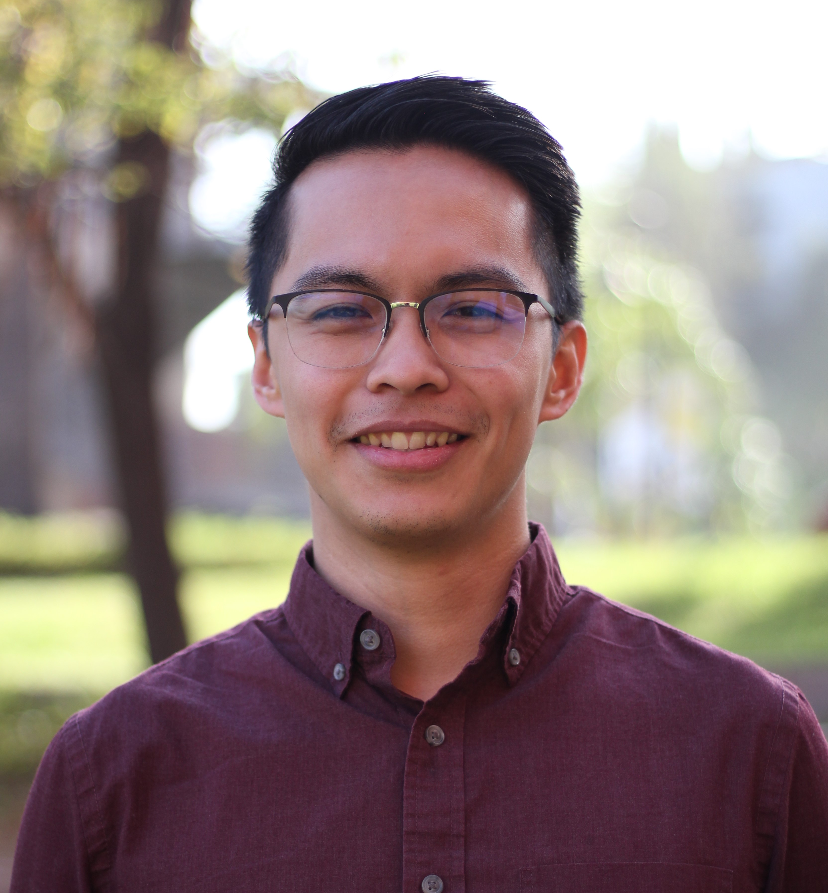

(213) 369-8412
Maximilian Hawk Orozco
(213) 369-8412
maxorozco213@gmail.com
Los Angeles, California
About me
I am a recent graduate from California State University, Los Angeles with a Bachelor's of Science in Computer Science. During my years in college I have accumulated a wealth of experience with customer service and team collaboration from working part-time at Los Angeles City Hall and other establishments. In my classes and free time I have also gained experience using Java, JavaScript, Kotlin, Python, and related Frameworks such as ReactJS and React Native. I have a passion for anything tech which makes me eager to start my career as an engineer.